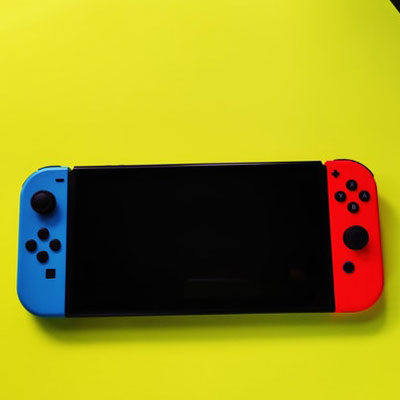
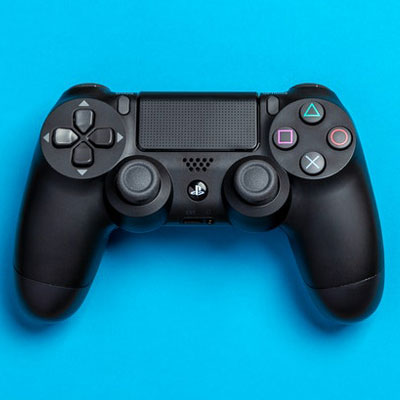

Xbox is a popular gaming system created by the American Company Microsoft. The Xbox was first released in 2001 becoming as popular as the PlayStation and Nintendo GameCube at the time. Along with the Xbox came Xbox Live, Xbox’s online gaming network that was released in 2002 soon after the release of the first console. It allowed players to compete with others online over the internet and had over two million subscribers. Over the years, Xbox has created multiple upgraded consoles as technology continues to progress. Over the last two decades, Microsoft has released the Xbox, Xbox 360, Xbox Kinect, Xbox One, and most recently the Xbox Series. The Xbox 360 was released in 2005, replacing the Xbox. This console faced pressure from the Nintendo Wii and Sony PlayStation while in the competitive market within its initial release, but by 2010 the Xbox 360 became the most played game console in America. A few years, later the Xbox One was released with a more powerful system, which was a flaw of the 360.
Source: Britannica, T. Editors of Encyclopaedia (2021, December 16). Xbox. Encyclopedia Britannica. https://www.britannica.com/technology/Xbox
Nintendo

Nintendo Switch
Nintendo is a well-known video company from Japan that develops video games and video game consoles. The first console created by Nintendo was the Color TV-Game released in 1977 becoming one of the first video game consoles to be released. Soon Nintendo gain international popularity and continued to produce some of the most successful video game consoles. Over the years, Nintendo has created the Game Boy, Super Nintendo Entertainment System, Nintendo DS, Wii, and most recently, the Switch. Nintendo has also produced popular video game franchises such as Super Mario Bros, Donkey Kong, and Pokémon. The first electronic games created by Nintendo were arcade games with their first games being EVR Race, the first electromechanical game and Donkey Kong, the first platform game that allowed the character to jump. Eventually, Nintendo created Super Mario Bros and the main character, Mario became the mascot for Nintendo which is now internationally recognized.
Source:Wikimedia Foundation. (2022, April 9). Nintendo. Wikipedia. https://en.wikipedia.org/wiki/Nintendo
PlayStation

PlayStation Controller
The PlayStation is another popular gaming console created by Sony Computer Entertainment that has made and continues to make newer and updated versions of the PlayStation. The first PlayStation, also known as the PS One was released in 1994 putting Sony in the running against Nintendo at the time. The console was first released in Japan before making its American debut in 1995. As the years progressed, Sony created newer versions of the PlayStation such as the PlayStation 2, 3, 4, and most recently the PlayStation 5.
Source: Britannica, The Editors of Encyclopaedia. "PlayStation". Encyclopedia Britannica, 3 Mar. 2022, https://www.britannica.com/topic/PlayStation.